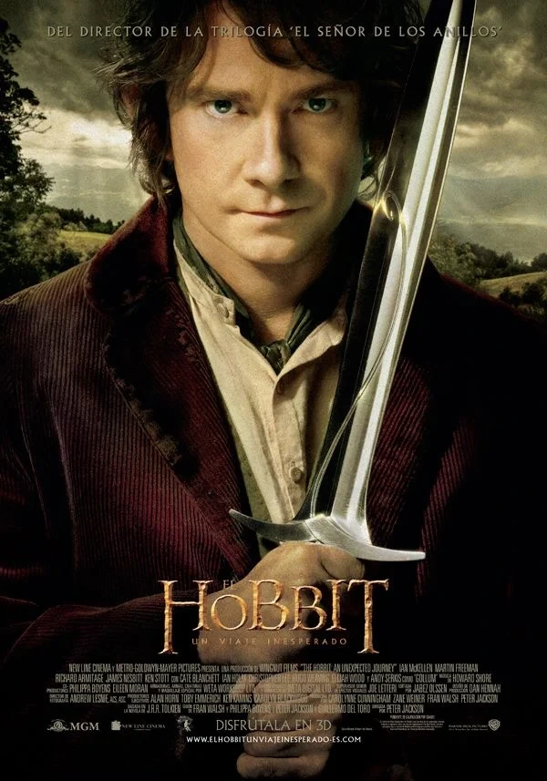

Ficha de la película
Año: 2012
Director: Peter Jackson
Novela: J.R.R. Tolkien
Duración: 169min
Saga: EL HOBBIT
Reparto principal:
Martin Freeman, Ian McKellen, Richard Armitage, Ken Stott, Graham McTavish, William Kircher, James Nesbitt, Stephen Hunter, Dean O'Gorman, Aidan Turner, John Callen, Peter Hambleton, Jed Brophy, Mark Hadlow, Adam Brown, Hugo Weaving, Cate Blanchett, Christopher Lee, Andy Serkis, Elijah Wood, Ian Holm
Sinopsis
El pacífico hobbit Bilbo Bolsón es embarcado en una épica búsqueda por el mago Gandalf para ayudar a una compañía de trece enanos, liderada por Thorin Escudo de Roble, a reclamar su hogar ancestral y el tesoro robado en la Montaña Solitaria (Erebor), dominada por el temible dragón Smaug. A lo largo de su viaje a través de tierras salvajes, Bilbo debe enfrentarse a trasgos, orcos y cruzar caminos con la criatura Gollum, donde encuentra un misterioso anillo de oro que cambiará su destino.
Personajes que aparecen
Bilbo Bolsón · Gandalf el Gris · Thorin Escudo de Roble · Balin · Dwalin · Kíli · Fíli · Dori · Nori · Ori · Óin · Glóin · Bifur · Bofur · Bombur · Gollum · Elrond · Galadriel · Saruman · Radagast el Pardo · El Gran Trasgo · Azog el Profanador
Lugares importantes
Bolsón de Cerrado (La Comarca) · Bosque de los Trolls · Rivendel · Las Montañas Nubladas · Ciudad Trasgo
Objetos importantes
Anillo ÚnicoEspada Dardo (Sting)Espada OrcristEspada GlamdringVara de Gandalf Mapa de ThrorLlave de EreborCuriosidades
Innovación a 48 fps: Fue la primera gran producción cinematográfica en ser filmada y proyectada a 48 fotogramas por segundo (High Frame Rate) en lugar de los 24 fps tradicionales, ofreciendo una imagen hiperrealista pero dividiendo la crítica.
El peinado de Thorin: El actor Richard Armitage tuvo que usar prótesis faciales y una peluca que le acaloraba tanto que perdía varios kilos por semana durante el rodaje de las escenas de acción.
Casting perfecto: Martin Freeman siempre fue la primera opción de Peter Jackson para hacer de Bilbo. Cuando el actor casi rechaza el papel por compromisos con la serie Sherlock, Jackson ajustó todo el calendario de rodaje para esperarlo.